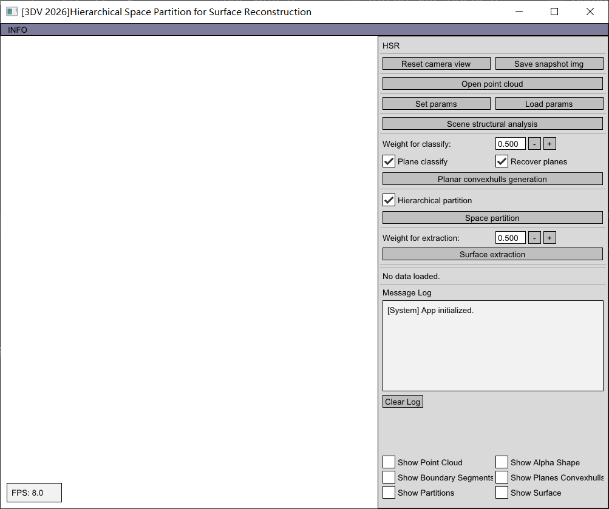

Abstract
Generating compact polygonal models from point clouds is a key problem in 3D vision and computer graphics. However, due to inherent limitations of LiDAR scanning (e.g. range constraints and occlusions), critical scene information is often missing, leading to degraded reconstruction accuracy. To address this, we propose a plane assembling strategy that effectively recovers missing details while maintaining model compactness. We classify all the planes extracted from the scene into three categories: highly visible, barely visible, and invisible. The invisible planes, which are recovered by scene structure analysis, indicate the missing details. The three types of planes correspond to the three growth priorities. Each plane grows according to the priority level, and the space is partitioned progressively, namely, the hierarchical partition. Subsequently, we generate a watertight polygonal mesh from the partition via a min-cut-based optimization. Finally, comparisons on public datasets show the effectiveness and superiority of our method against mainstream approaches.
Methodology

Our algorithm takes point cloud (a) as the input and first performs the scene structure analysis (b), which mainly includes: planes detection (b1), planar connective analysis (b2), boundary segments fitting (b3) and planar intersection lines calculation (b4). Subsequently visible planes categorization (c) is performed: including visible calculation (c1) and highly/barely visible labelling (c2). Meanwhile, we recover missing planes (d) through fitting the singular segments (i.e., the segments that are not contained by any intersection lines (d1)). After that, the 3D bounding box is hierarchically partitioned (f) using the different categories of primitives (i.e., convex hulls of highly visible planes (e1), barely visible planes (e2) and invisible (missing) planes (e3)). Finally, based on the inside/outside labeling of polyhedral cells, a concise, watertight polygonal mesh is generated (f).
Some Experimental Results

We evaluate our approach with state-of-the-art methods against several quality and performance metrics, on several datasets that differ in terms of complexity, size and acquisition characteristics.
Demo-GUI

We provide an executable application with a Graphical User Interface (GUI) and a real-time rendering window, which implements the proposed algorithm. This tool allows users to visualize the hierarchical partition process and the final mesh generation interactively. For detailed operation instructions, please refer to the documentation included in the provided .zip archive. All source code will be made publicly available after the review process.